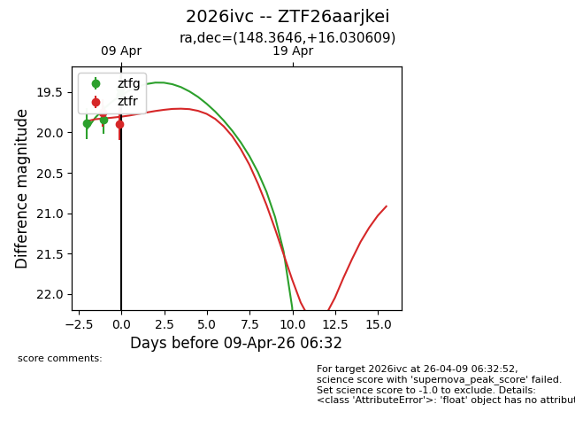
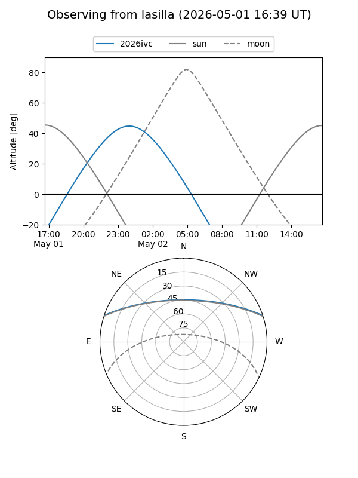
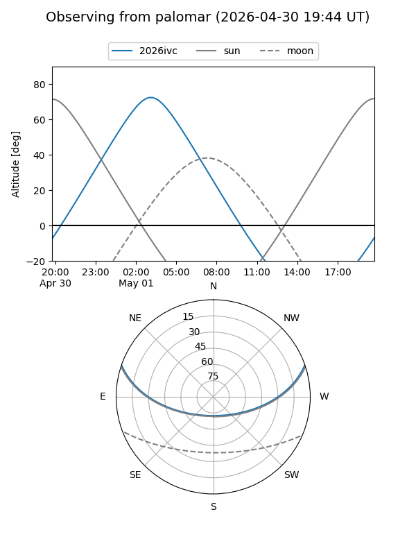
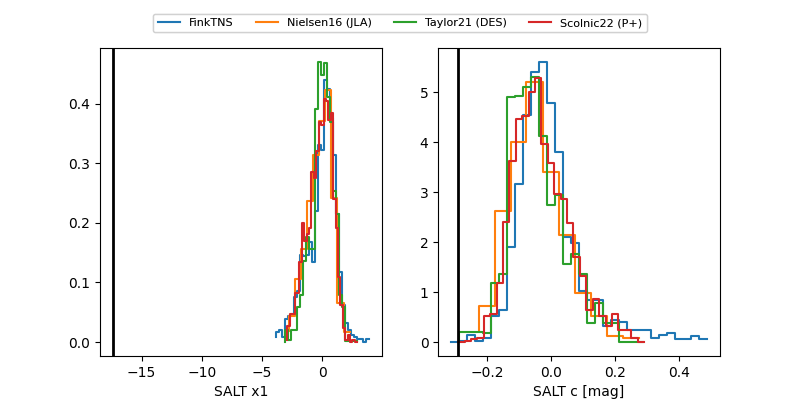

2026ivc
Target 2026ivc at 2026-04-09 06:37
Aliases and brokers:
FINK: link
Lasair: link
ALeRCE: link
TNS: link
YSE: link
alt names
ZTF26aarjkei (ztf,fink_ztf)
2026ivc (tns,yse)
Coordinates:
equatorial (ra, dec) = 148.3646,+16.03061
equatorial (HMS+DMS) = 09:53:27.50,+16:01:50.19
galactic (l, b) = (218.5988,+47.39807)
Flags:
Photometry:
last ztfg=19.46, ztfr=19.89
4 ztfg, 2 ztfr detections
Lightcurve

Visibility


Additional plots
